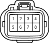

Код детали
A68
Каталожный номер
90980-10891
Цвет
Темно-серый
Технические характеристики
Жгуты проводов для ремонта

Система
АБС (для моделей с 2TR-FE, 5L-E)
Система кондиционирования
Передние стеклоочиститель и стеклоомыватель (для моделей с правосторонним рулевым управлением без автоматических стеклоочистителей)
Точки соединения с массой
Стоп-сигналы
TRC (для моделей с 2TR-FE)
Сцепное устройство для прицепа
VSC (для моделей с 2TR-FE)